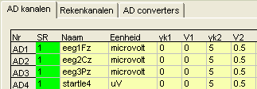
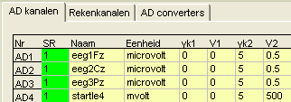
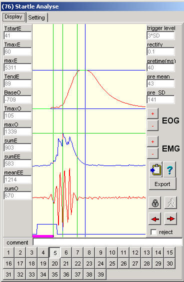
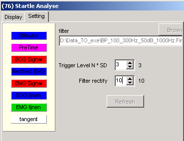
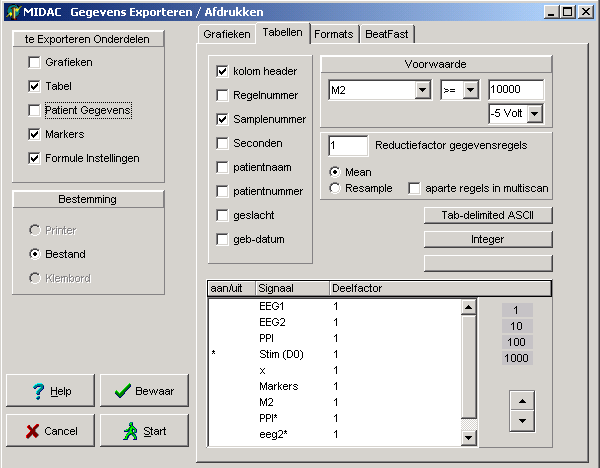
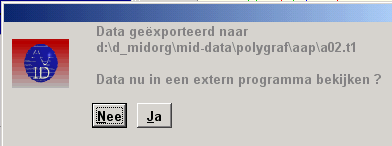
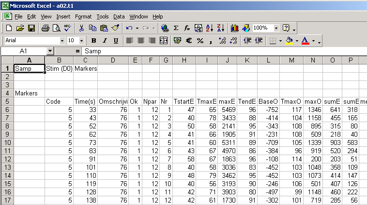
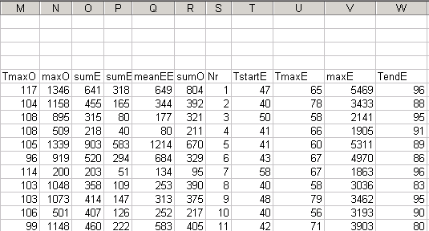
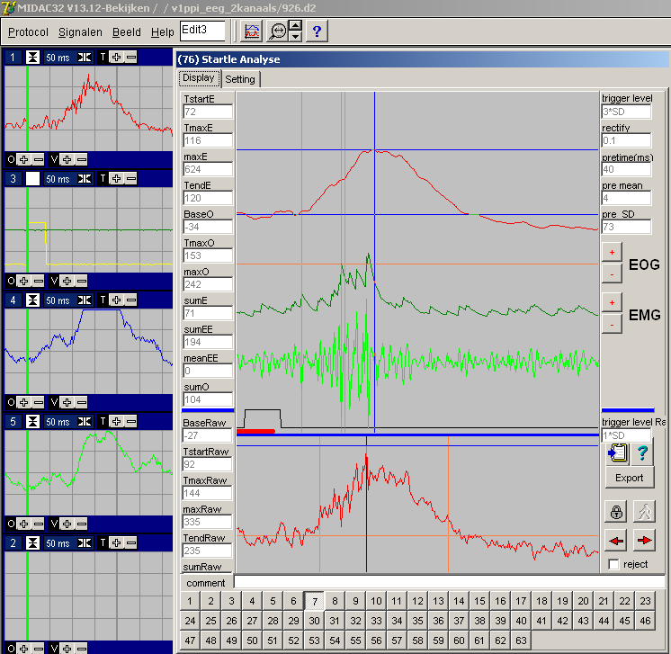
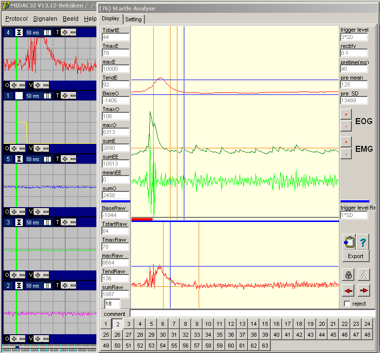

Startle Analyse (f76)
LET OP:
De kalibratie van het startle signaal moet in micro-Volt zijn !!
Als hieraan niet is voldaan, wordt er fout (c.q. niet) gemeten.
GOED: 
FOUT: 
Modificaties 1-10-2007
Omdat bij eenaantal metingen het stimulus en pre-stimulus signaal was omgewisseld, is een extra knopje op het instelbald aangebracht.
Modificaties 23-3-2007 (V16.1)
 Midac: F76, startle analye, export gaf dubbele markers. (Resteert dat na een export de data opnieuw moet worden geladen, verder mag het tijdsvenster niet kleiner zijn dan 20 msec/div (dit laatste was altijd al zo).
Midac: F76, startle analye, export gaf dubbele markers. (Resteert dat na een export de data opnieuw moet worden geladen, verder mag het tijdsvenster niet kleiner zijn dan 20 msec/div (dit laatste was altijd al zo).
Modificaties 17-september-2004
Het ruwe signaal is toegevoegd aan het grafische display, de analyse en de export.
De toegevoegde signalen zijn te vinden in onderstaande tabel.
Bij oude analyses, die al handmatig gecorrigeerd zijn, blijven de handmatige correcties behouden en wordt dus enkel een automatische berekening van de nieuwe parameters uitgevoerd. Wel is er 1 eigennaardigheid, na zo'n eerste run, kleuren de nummerknopjes niet goed. Dus advies: even afsluiten en opnieuw openen.
Tevens is een bug verwijderd: als de gain werd gewijzigd, werd de betreffende Startle opnieuw berekend, waardoor eventueel aanwezige handmatige wijzigingen verloren gingen.
Inleiding
Met deze functie kunnen Startle responses worden geanalyseerd.
Als invoer dienen het gecombineerde EMG/EOG signaal en de stimulus.
De functie kent geen uitgangssignalen.
Startle responses kunnen individueel in een apart venster worden bekeken.
In dit venster kunnen ook correcties op de automatisch bepaalde metingen worden uitgevoerd. Verder kunnen metingen worden genegeerd en worden voorzien van commentaar.
De metingen kunnen als een tab-delimited file worden geëxporteerd, waarbij in het geval van handmatige correcties, ook altijd de door de computer berekende waarden worden uitgevoerd.
De functie heeft 2 ingangssignalen nodig, het gecombineerde EMG/EOG en het stimulus signaal.
Startle Meetvenster
|
Bovenste signaal (rood) is het EOG. Het middelste signaal (blauw) is het gelijkgerichte EMG. Het onderste signaal (rood) is het ruwe EMG. Helemaal onderaan is nog de stimulus te zien.
De horizontale en vertikale lijnen geven de (door de computer) berekende parameters aan. (Blauwe lijnen voor het EOG en groene lijnen voor het EMG)
De berekende parameters staan numeriek ook vermeld aan de linker kant van het venster. Aan de rechterkant staan nog enkele numerieke instellingen en het gemeten ruisnivo vlak voor de respons.
Met de +/- knoppen EOG kan het display van het EOG worden geschaald. (Idem met +/- knoppen EMG).
Het knopje met het klemboard, stuurt een afdruk van het venster naar het clipboard.
Het vraagteken geeft de help informatie over deze funktie.
Export-knop, exporteert alle metingen naar een tab-delimited file (gelijk aan de standaard export knop van Midac). Na export, kan de data direct middels bv Excel worden bekeken.
Met de rode pijlen, de nummerknoppen onderaan, PageUp / PageDown, en de normale tijdbalk in Midac kan een gewenste stimulus-respons zichtbaar worden gemaakt.
Per stimulu-respons kan een kort commentaar worden ingevuld, dat ook in de exportfile wordt opgeslagen.
Door het vakje REJECT aan te vinken wordt aangegeven dat de meting genegeerd moet worden. |
 |
Instellingen
|
In het instelling scherm, kunnen de kleuren van de achtergrond en van afzonderlijke elementen worden ingesteld. Klik op het gewenste vak en wijzig de kleur.
Het filter is vooralsnog vast ingesteld en dus zijn de bijbehorende knoppen gedisabled.
De trigger drempel wordt ingesteld op een veelvoud van de SD van het ruisnivo vlak voor de Startle respons. Deze kan worden ingesteld tussen de 3* en 10* t.o.v de SD van de ruis.
Filter Rectify, is de afval tijd van het RC filter na gelijkrichting. Deze parameter heeft nauwelijks invloed op de berekende parameters (wel op de visuele afbeelding van het gelijkgerichte signaal) en kan worden ingesteld tussen de het beste worden ingesteld op 10.
Zodra een van de numerieke instellingen wordt gewijzigd, dan wordt de knop "Refresh" geenabled. Het is de bedoeling dat deze knop dan wordt ingedrukt, waarna alle startles opnieuw worden geanalyseerd. Hierbij gaan de handmatige correcties en de genegeerde metingen uiteraard verloren. Het commentaar dat is ingevoerd blijft wel behouden. |
 |
Gemeten Parameters
Het eerste blok bevat de door de computer berekende waarden.
In het tweede blok zijn de metingen die handmatig gecorrigeerd zijn opgenomen in plaats van de computer berekeningen.
|
Titel |
Beschrijving |
|
Ok |
1 = ok (startle geaccepteerd) 0 = startle rejected |
|
Npar |
12 startle record is niet handmatig gewijzigd -12 startle record is handmatig gewijzigd, de tweede set kolommen beavt de handmatige wijziging |
|
Nr |
Volgnummer |
|
TstartE |
Starttijdstip van het EMG, Zoals alle tijdstippen, gemeten vanaf het begin van de stimulus |
|
TmaxE |
Tijdstip waarop het maximum in het EMG optreedt (***) |
|
maxE |
Maximum amplitude van het gelijkgerichte EMG (***) |
|
TendE |
Tijdstip waarop het EMG is afgelopen |
|
BaseO |
Basisamplitude van het EOG t.o.v. de BaseO |
|
TmaxO |
Tijdstip waarop het maximum in het EOG optreedt |
|
maxO |
Maximum amplitude van het EOG |
|
sumE/100 |
Het gesommeerde gelijk gerichtte EMG |
|
sumEE |
SD van het EMG over de actieve periode |
|
meanEE |
0 (geen betekenis) |
|
sumO/100 |
EOG oppervlakte vanaf TstartE tot TmaxO |
|
BaseRAW |
Basis amplitude van het ruwe signaal |
|
TstartRAW |
Starttijdstip van de Startle in het Ruwe signaal |
|
TmaxRAW |
Tijdstip waarop het maximum optreedt |
|
TendRAW |
Einde van de startle |
|
maxRAW |
Amplitude van de startle(t.o.v. BaseRAW) |
|
sumRAW/100 |
Oppervlakte (t.o.v. BaseRAW), van TstartRAW tot TendRAW |
|
Hier begint het tweede blok, met precies dezelfde kolommen, maar nu zij de waarde de handmatige gecorrigeerde waarden. |
|
|
Nr |
|
|
... |
|
Fout
(***) Het meten van een maximum op deze wijze is mijn inziens niet juist.
Het signaal is relatief breedbandig, in welk geval gelijkrichting en afvlakking leiden tot een aanzienlijk fout in de gemeten waarden. Mijn ruwe inschatting is, dat er een extra onzekerheid in het tijdstip van het maximum ontstaat van 5 tot 10 msec. De piek amplitude krijgt een extra onzekerheid van zo'n 10 .. 20%.
De juiste methode (m.i.) is Hilbert transformeren, Analytisch signaal maken, en omhullende van het analytisch signaal berekenen.
Voorzover ik metingen heb gezien, is met name de bepaling van het maximumtijdstip problematisch: de extra fout is in de orde van grootte of zelfs groter dan het te meten phenomeen.
Export Instellingen
Door de voorwaarde dusdanig in te stellen, dat er geen exportregels worden gegenereerd, wordt een nagenoeg direct geschikte exportfile verkregen met enkel de markers en de daarbij uitgerekende parameters.

Na een export kunnen de berekende parameters, direct in bv Excel worden bekeken,
door op JA te drukken

Hier een voorbeeld van een dergelijke Excel View.

Hier is te zien dat in kolom S, het tweede blok start.


Onderstaande is een foute 500 Hz
